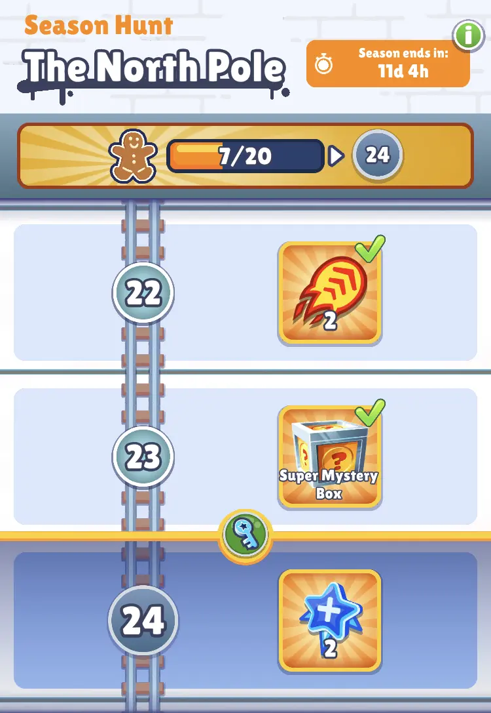
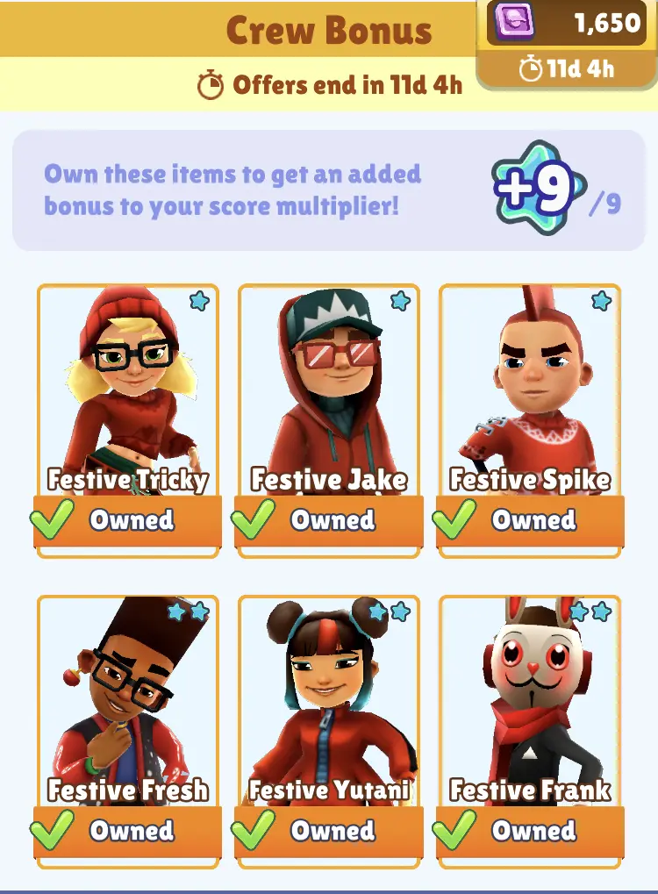

52 неделя 2021
Всем ку, это я, старый повар.
Ладдер

На этой неделе получилось быстро взять чемпиона на первый
же день недели. Возможно повезло, что все топовые чуваки
не играют перед Новым Годом. Несмотря на это планка на Diamond
осталась довольно высокая - 3 M. Вообщем вот так.
Сезон

Текущий статус довольно хороший: 23/40 наград.

При этом я уже имел Festive Tricky, Jake, Fresh, Yutani и Frankа, так что мне оставалось только Festive Spike'а. Его я быстро получил благодаря постоянному удвоению токенов. Конечно, это отнимает много лишнего времени на просмотр рекламы, но иногда иначе не получить всех наград за сезон.
Спасибо, что прочитал :) возвращайся на следущей неделе.